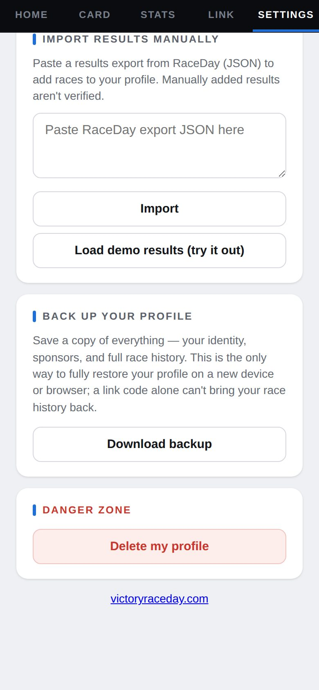
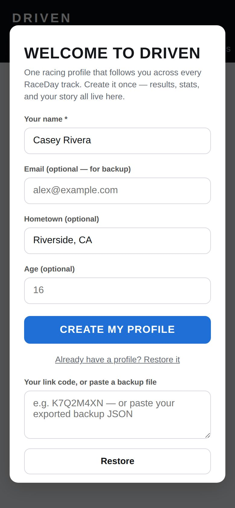

-
Download a backup
In Settings, under Back up your profile, tap Download backup.

Back up your profile -
Keep it somewhere safe
Email it to yourself or save it to cloud storage. Make a fresh one every so often — it holds your whole race history.
-
Restore on a new phone
Open Driven on the new phone and tap Already have a profile? Restore it. Open your backup file, copy everything in it, paste it into the box, and tap Restore.

Restore -
No backup? Use your link code
Type your link code in the same box instead. That brings back your card — name, number, sponsors and Pro — but not your race history.
-
Deleting your profile
Settings → Danger zone → Delete my profile removes it from this phone and takes your public card down. It can't be undone.
Good to know
- Only a backup file brings back everything — your link code brings back your card.
Next guides
Still stuck? The Driver FAQ covers common questions, and the Field Manual walks through every Driven screen. Or just ask.
Email a question →